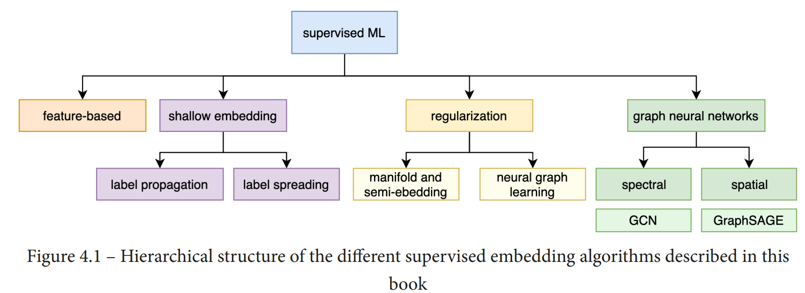

Chapter 4 : Supervised Graph Learning#
Supervised learning has long been a cornerstone of machine learning, where the goal is to learn predictive patterns from labeled data. This framework naturally extends to graph-structured data, where supervision can take various forms—labels may be associated with individual nodes, groups of nodes, or entire graphs. In such cases, the objective becomes learning a function that accurately maps graph-based inputs to their corresponding labels.
Graphs are powerful data structures for modeling relational systems, such as social networks, biological interactions, citation networks, and more. Supervised graph learning enables us to harness this structure for tasks like node classification, link prediction, or graph classification. For instance, in a citation graph, we might want to predict the research field of a paper based on its citation neighborhood; in a molecular graph, we may wish to predict the biological activity of a compound.
To address these tasks, a variety of supervised graph learning approaches have emerged. These range from traditional feature engineering methods to modern deep learning models like graph neural networks (GNNs), which can learn both structure and features jointly. Throughout this chapter, we will explore key methods and strategies that enable supervised learning on graphs, with an emphasis on embedding techniques and neural architectures designed to capture complex patterns in structured data.
The topics covered will include:
Key principles of supervised graph embedding
Classical feature-based and shallow embedding methods
Techniques incorporating graph regularization
Neural network-based models, including graph convolutional networks (GCNs)
By the end of this chapter, readers will gain a clear understanding of how supervised learning is adapted to graph data, and the tools available to implement these methods effectively. 
Key Principles of Supervised Graph Embedding#
Supervised graph embedding aims to transform graph-structured data into low-dimensional vector representations that are informative for downstream prediction tasks. Unlike unsupervised methods that focus solely on preserving graph topology, supervised embeddings are guided by label information, enabling them to learn representations that are more discriminative for specific tasks.
The core principles include:
Label-Guided Representation Learning: Embeddings are optimized not only to capture structural relationships in the graph but also to align with label similarities. Nodes or subgraphs with the same label should be mapped closer together in the embedding space.
Task-Specific Optimization: The embedding process is tied directly to a predictive task, such as node classification or graph-level prediction. This task supervision steers the learning process to focus on features that are most relevant to the objective.
Joint Learning of Structure and Features: Supervised methods often integrate node attributes, edge relationships, and label information in a unified framework, enhancing the ability to capture both local and global graph patterns.
Generalization and Transferability: The learned embeddings should generalize well to unseen nodes or graphs and ideally be transferable across related tasks or domains.
End-to-End Trainability: Many modern supervised graph embedding models, particularly those based on neural networks, are trained in an end-to-end fashion. This allows for direct optimization of the embedding quality with respect to the task loss (e.g., cross-entropy for classification).
These principles form the foundation of most state-of-the-art supervised graph learning algorithms, enabling them to achieve high accuracy and interpretability across a variety of graph-based applications.
Feature based methods#
Classical Feature-Based Supervised Graph Learning#
Before the rise of deep learning on graphs, traditional machine learning approaches dominated supervised graph learning tasks. These methods rely on hand-engineered features extracted from graph structures and then apply classical classifiers such as Support Vector Machines (SVM), Decision Trees, or Logistic Regression. This approach is particularly effective when domain knowledge can inform feature design or when datasets are small.
Key Idea#
The main idea behind feature-based supervised graph learning is to transform the graph data into a fixed-size feature vector that can be fed into conventional supervised learning models. These features are designed to capture the structural, topological, or statistical properties of the graph, node, or edge.
Depending on the granularity of the prediction task, feature vectors are created for:
Nodes (for node classification),
Edges (for link prediction),
Entire graphs (for graph classification).
Commonly Used Graph Features#
Some typical features used in this paradigm include:
Degree: Number of connections a node has.
Clustering Coefficient: Measures how connected a node’s neighbors are.
Betweenness Centrality: Measures a node’s role in connecting different parts of the graph.
PageRank: A variant of eigenvector centrality, used to identify influential nodes.
Shortest Path Statistics: Features based on distances to other nodes.
Neighborhood Subgraph Patterns: Patterns in the local neighborhood of a node.
Workflow#
The workflow typically involves the following steps:
Feature Extraction: Compute graph-based features using tools like NetworkX or custom algorithms.
Label Assignment: Use existing labels for nodes/edges/graphs for supervised training.
Model Training: Apply a standard ML algorithm (e.g., Random Forest, SVM) on the feature vectors and labels.
Evaluation: Assess the model on a separate test set using accuracy, F1-score, AUC, etc.
Advantages and Limitations#
Advantages:
Simple to implement.
Compatible with any standard ML pipeline.
Effective when features are well-engineered and meaningful.
Limitations:
Hand-crafting features can be labor-intensive and domain-specific.
May fail to capture complex dependencies in large and dynamic graphs.
Not scalable to very large graphs or graphs with high variability in structure.
Summary#
Classical feature-based supervised graph learning provides a foundational approach for tasks involving graph-structured data. Though gradually replaced by automated representation learning methods (e.g., Graph Neural Networks), it remains valuable for its interpretability and simplicity, especially in low-resource settings or as a baseline for comparison.
Example: Node Classification in a Citation Network#
Imagine a citation network where each node represents a scientific paper, and an edge exists between two nodes if one paper cites the other. Each paper belongs to one of several research areas (e.g., AI, systems, theory), and the goal is to predict the research area of a paper based on its graph structure.
Step 1: Feature Extraction#
We compute several features for each paper (node):
Degree: Number of citations.
Clustering Coefficient: How tightly connected the paper’s neighbors are.
PageRank Score: Importance based on citation structure.
Average Degree of Neighbors: Captures neighborhood richness.
Using a library like NetworkX in Python:
import torch
from torch_geometric.datasets import Planetoid
from torch_geometric.utils import to_networkx
import networkx as nx
import pandas as pd
# Load Cora dataset
dataset = Planetoid(root='data/Planetoid', name='Cora')
data = dataset[0]
# Convert to NetworkX graph (undirected for clustering)
G = to_networkx(data, to_undirected=True)
# Compute graph-based features
degree = dict(G.degree())
clustering = nx.clustering(G)
pagerank = nx.pagerank(G)
avg_neighbor_degree = nx.average_neighbor_degree(G)
# Combine into a DataFrame
features = pd.DataFrame({
'degree': pd.Series(degree),
'clustering': pd.Series(clustering),
'pagerank': pd.Series(pagerank),
'avg_neighbor_degree': pd.Series(avg_neighbor_degree)
})
print(features.head())
---------------------------------------------------------------------------
ModuleNotFoundError Traceback (most recent call last)
Cell In[1], line 5
3 from torch_geometric.utils import to_networkx
4 import networkx as nx
----> 5 import pandas as pd
7 # Load Cora dataset
8 dataset = Planetoid(root='data/Planetoid', name='Cora')
ModuleNotFoundError: No module named 'pandas'
import torch
from torch_geometric.datasets import Planetoid
from torch_geometric.utils import to_networkx
import networkx as nx
# Load the Cora dataset
dataset = Planetoid(root='data/Planetoid', name='Cora')
data = dataset[0]
# Convert to a NetworkX graph (undirected for clustering)
G = to_networkx(data, to_undirected=True)
# Compute node-level features
degree = dict(G.degree())
clustering = nx.clustering(G)
pagerank = nx.pagerank(G)
avg_neighbor_degree = nx.average_neighbor_degree(G)
# Combine features manually into a list of dictionaries
node_features = []
for node in G.nodes():
feature_dict = {
'node_id': node,
'degree': degree.get(node, 0),
'clustering': clustering.get(node, 0.0),
'pagerank': pagerank.get(node, 0.0),
'avg_neighbor_degree': avg_neighbor_degree.get(node, 0.0)
}
node_features.append(feature_dict)
# Print first 5 feature dictionaries
for i in range(5):
print(node_features[i])
Downloading https://github.com/kimiyoung/planetoid/raw/master/data/ind.cora.x
Downloading https://github.com/kimiyoung/planetoid/raw/master/data/ind.cora.tx
Downloading https://github.com/kimiyoung/planetoid/raw/master/data/ind.cora.allx
Downloading https://github.com/kimiyoung/planetoid/raw/master/data/ind.cora.y
Downloading https://github.com/kimiyoung/planetoid/raw/master/data/ind.cora.ty
Downloading https://github.com/kimiyoung/planetoid/raw/master/data/ind.cora.ally
Downloading https://github.com/kimiyoung/planetoid/raw/master/data/ind.cora.graph
Downloading https://github.com/kimiyoung/planetoid/raw/master/data/ind.cora.test.index
Processing...
Done!
{'node_id': 0, 'degree': 3, 'clustering': 0.3333333333333333, 'pagerank': 0.0003356029716229603, 'avg_neighbor_degree': 3.3333333333333335}
{'node_id': 1, 'degree': 3, 'clustering': 0, 'pagerank': 0.00038527094424122357, 'avg_neighbor_degree': 2.6666666666666665}
{'node_id': 2, 'degree': 5, 'clustering': 0, 'pagerank': 0.0005146369200521648, 'avg_neighbor_degree': 16.0}
{'node_id': 3, 'degree': 1, 'clustering': 0, 'pagerank': 0.00036927621861152144, 'avg_neighbor_degree': 1.0}
{'node_id': 4, 'degree': 5, 'clustering': 0.7, 'pagerank': 0.000396058502986215, 'avg_neighbor_degree': 6.6}
Step 2: Supervised Learning#
Assume we have ground-truth labels for a subset of the papers indicating their field. We train a classifier using scikit-learn:
from sklearn.ensemble import RandomForestClassifier
from sklearn.model_selection import train_test_split
from sklearn.metrics import classification_report
import numpy as np
# Convert list of dicts to numpy array (features)
X = np.array([
[
node['degree'],
node['clustering'],
node['pagerank'],
node['avg_neighbor_degree']
]
for node in node_features
])
# Get labels from PyG data
y = data.y.cpu().numpy() # class labels for each paper
# Train/test split
X_train, X_test, y_train, y_test = train_test_split(
X, y, test_size=0.3, random_state=42, stratify=y
)
# Train classifier
clf = RandomForestClassifier(random_state=42)
clf.fit(X_train, y_train)
# Predict and evaluate
y_pred = clf.predict(X_test)
print(classification_report(y_test, y_pred))
precision recall f1-score support
0 0.22 0.21 0.21 105
1 0.52 0.35 0.42 65
2 0.54 0.48 0.50 126
3 0.44 0.50 0.47 246
4 0.29 0.31 0.30 128
5 0.20 0.21 0.21 89
6 0.16 0.13 0.14 54
accuracy 0.36 813
macro avg 0.34 0.31 0.32 813
weighted avg 0.37 0.36 0.36 813
Step 3: Interpretation#
The trained model learns how graph-based features (like citation degree or clustering) correlate with a paper’s field. For example, papers in “theory” may cite fewer but more central works, while “systems” papers might form densely connected communities.
This method is simple, interpretable, and effective when the features are meaningful — making it a solid baseline before applying more complex methods like Graph Neural Networks.